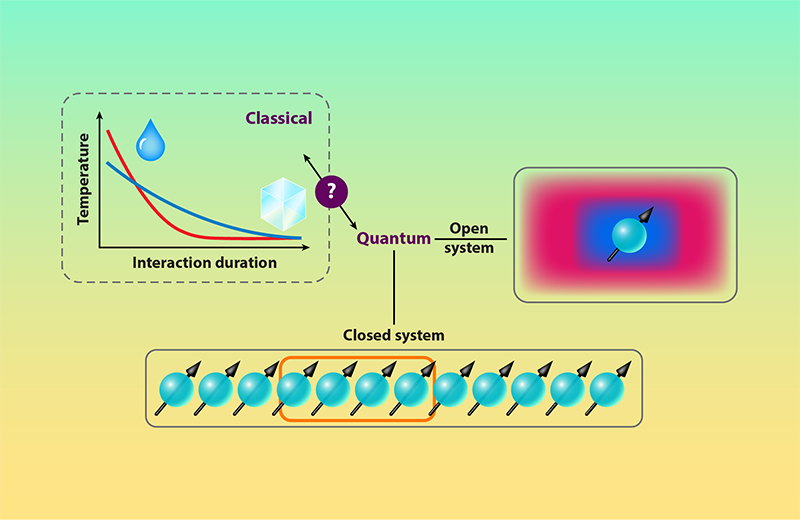
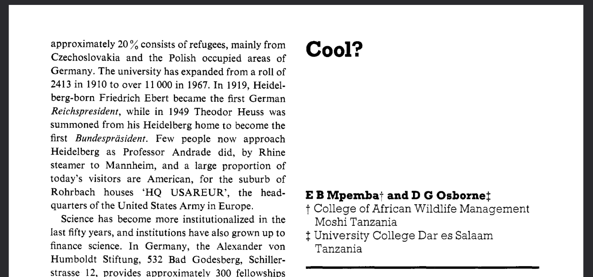
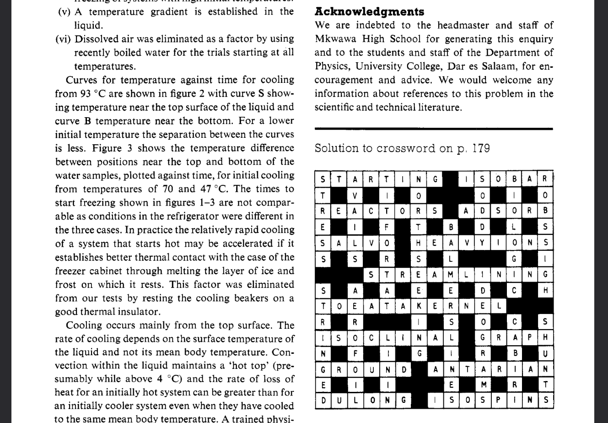

Microscopic origin of the quantum Mpemba effect in integrable systems
Group Seminar
2025-12-02
Mpemba effect
The 60’s where wild
The 60’s where wild
Mpemba effect in an isolated system?
- Conserved U(1) charge
- Integrable systems were chosen, but not only
- Asymmetric charge state relaxes faster than symmetric one
Thermal Fluctuations \(\rightarrow\) Quantum Fluctuations
Setting
\[ [H, Q] = 0 \]
Initial state: \([\rho=\bra{\Psi_0}\ket{\Psi_0}, Q] \ne 0\), \([\rho, H] \ne 0\)
Unitary evolution \(e^{-iHt}\)
A closed system will never relax to a stationary state
Study subsystem \(A\) of length \(l\)
Restriction of \(Q\) to subsystem as \(Q_A; \quad q = \tr[\rho_A(0)Q_A]\)
Local relaxation ansatz
Under generic circumstances, however, we expect that locally the system relaxes to a stationary state, and, barring some exotic instances, that this stationary state restores the \(U(1)\) symmetry, i.e.,
\[\lim_{t\to\infty} [\rho_A(t), Q_A] = 0 \]
Symmetry restoration as coarse-grained quantum Mpemba effect (QME) proxy.
Compare different broken symmetry states.
Entanglement asymmetry
Recently introduced measure that distills the interplay between the spreading of entanglement and the dynamics of a conserved charge.
\[ \Delta S_A(t) = \tr[\rho_A(t)\log(\rho_A(t)) - \rho_A(t)\log(\rho_{A,Q}(t))]\] where symmetrized reduced density matrix \(\rho_{A,Q}(t) = \sum_q \Pi_q \rho_A(t) \Pi_q\), and \(\Pi_q\) is projector onto eigenspace of \(Q_A\) with eigenvalue \(q\).
Entanglement asymmetry
\[\Delta S_A(t) \ge 0\]
\(\Delta S_A(t) = 0\); iif \([\rho_A(t), Q_A] = 0\) (local symmetry restoration)
We expect \(\lim_{t\to\infty} \Delta S_A(t) = 0\).
We say \(\rho_{A,1}\) is more symmetry broken than \(\rho_{A,2}\) if \(\Delta S_{A,1} > \Delta S_{A,2}\).
Conditions for quantum Mpemba effect
- \(\Delta S_{A,1}(0) - \Delta S_{A,2}(0) > 0\),
- \(\Delta S_{A,1}(\tau) - \Delta S_{A,2}(\tau) < 0\),
where \(\tau > t_M\), with \(t_M\) the Mpemba time.
Generalization of criteria
Rényi entanglement asymmetry \[ \Delta S_A^{(n)} = \frac{1}{1-n} \left( \log\tr(\rho_{A,Q}^n) - \log\tr(\rho_{A}^n) \right) \]
The math trick: expand moments of \(\rho_{A,Q}, \rho_A\) in Fourier representation and then take limit \(n\to 1\).
Generalization of criteria
\[ \tr[\rho_{A,Q}^n(t)] = \int_{-\pi}^{\pi} \frac{d\vb*{\alpha}}{(2\pi)^{n-1}} \underbrace{\delta_p\left(\sum_{j=1}^n \alpha_j\right)}_{\text{Dirac delta function}} \underbrace{\tr\left[\prod_{j=1}^n \rho_A(t) e^{i\alpha_j Q_A}\right]}_{\text{charged moments}} \]
Emergent quasi-particle picture
Single species, but extension is possible
\[ \frac{\tr[\rho_{A,Q}^n]}{\tr[\rho_A^n] } = I_n + \mathcal{O}[(n-1)^2] \]
where
\[ I_n = \frac{1}{(2\pi)^{n-1}}\int_{-\pi}^{\pi} d\vb*{\alpha} \delta_p\left(\sum_{j=1}^n \alpha_j\right) e^{l\sum_{j=1}^n \int d\lambda x_\varsigma(\lambda) f_{\alpha_j}(\lambda)} \]
Series expansion of \(I_n\)
By the Poisson summation formula to rewrite the periodic delta function: \[ I_n = \sum_{k=-\infty}^{\infty} J_{k}^n \]
\[ J_k = \int_{-\pi}^{\pi} \frac{d\alpha}{2\pi} e^{ik\alpha} \exp\left[l \int d\lambda x_\varsigma(\lambda) f_\alpha (\lambda)\right] \]
Analytic continuation \(n\to z \in \mathbb{C}\)
As function is real for \(z\in\mathbb{R}\): \[ I_n \to I_z, \quad J_k^n \to \frac{1}{2} \left( e^{z\log J_k} + e^{z\log J_k^*}\right) \]
Reformulation of entanglement asymmetry
\[ \Delta S_A = - \lim_{z\to 1}[\delta_z I_z] = - \sum_{k=-\infty}^{\infty} Re[J_k(t) \log J_k(t)] \]
Reformulation of conditions
Expand \(\Delta S_A(t)\) for large \(l\) at \(t=0\) and \(t \gg l\):
- \(J_{q_{0,1},1}(0) - J_{q_{0,2},2}(0) < 0\)
- \(J_{0,1}(t) - J_{0,2}(t) > 0\)
where \(q_{0,j}\) is the expectation value of the charge in \(\rho_{A,j}(0)\).
Physical interpretation
Change of criteria:
\(\Delta\) charge asymmetry \(\to\) \(\Delta\) charge fluctuations
Physical interpretation of criteria 1
Leading order in \(l\): \[J_k(0) \sim \frac{1}{\sqrt{\pi\sigma_0^2}} e^{-\frac{(k-q_0)^2}{2\sigma_0}}\] where \(q_0\) is expectation value of charge at initial state, \(\sigma_0\) variance of charge.
\[ J_{q_{0,j},j}(0) \propto P(\tr[\rho_{A,j}(0) Q_A] = q_{0,j}) \]
Physical interpretation of criteria 2
To suppress charge fluctuations is to transport charge through boundaries
Expectation: Larger fluctuations transported predominantly by faster modes \(\to\) faster relaxation
\(J_{0,j}(t \gg l) \sim\) slow modes transport no charge \(\to\) no charge fluctuations
Physical interpretation of criteria 2
For example \(J_{0}(0) \propto P( \tr[\rho_A(0)Q_A]= 0)\)
For \(t\ne 0\), \(x_{\varsigma}(\lambda)\) filters out fast modes. At large times
\[ \exp\left[ l \int d\lambda x_\varsigma(\lambda) f_\alpha(\lambda)\right] \sim \tr\left[ \rho_A e^{i\alpha Q_\mathrm{sl}} \right] \]
Conclusion: slow modes are last to relax, faster relaxation when less involved in dynamics
Examples
Free fermions
\[ H = \int_{-\pi}^\pi d\lambda \overbrace{\epsilon(\lambda)}^\text{disp. rel.} \eta_\lambda^\dagger \underbrace{\eta_\lambda}_\text{ann. op.} \]
\[ Q = \int d\lambda \eta_\lambda^\dagger \eta_\lambda \]
Free fermions
Initial configuration is a squeezed state
\[ \ket{\Psi_0} = \exp\left[ - \int_0^\pi d\lambda \mathcal{M}(\lambda) \eta_\lambda^\dagger \eta_{-\lambda}^\dagger\right] \ket{0} \]
In this case, \(I_n\) is exact and we identify
\(v(\lambda) = \epsilon'(\lambda)\), \(f_\alpha(\lambda) = \log(1-\vartheta(\lambda)-\vartheta(\lambda)e^{2i\alpha})/(4\pi)\)
Free fermions
For specific choice of \(v, \mathcal{M}\):
\[ J_0 \simeq 1 - \frac{\vartheta''(0)}{48\pi} l \Lambda_\varsigma^3 \]
QME occurs if:
- \(\mathcal{X}_1 > \mathcal{X}_2\)
- \(\vartheta''_2(0) > \vartheta''_1(0)\)

Evolution of the entanglement asymmetry \(\Delta S_\mathrm{A}\) as a function of time for a subsystem of \(l=100\) sites. Different curves correspond to different initial states and the crossings signal the occurrence of QME. The figure reports the results for a free fermionic system. The results are obtained using Eq. (8).
Quantum Cellular Automaton
Quantum cellular automaton Rule 54. This is a locally interacting chain of L spin-1/2 variables (or qubits) where the time evolution happens in discrete time steps. Rule 54 is Bethe ansatz integrable and, therefore, supports stable quasiparticles.
Time is discretized, goes in steps

Evolution of the entanglement asymmetry \(\Delta S_\mathrm{A}\) as a function of time for a subsystem of \(l=100\) sites. Different curves correspond to different initial states and the crossings signal the occurrence of QME. The figure reports the results for the interacting Rule 54 quantum cellular automaton. The results are obtained using Eq. (8).